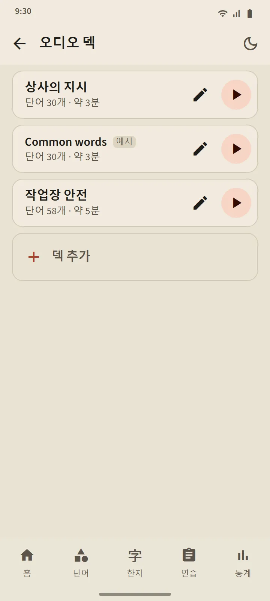

직접 만드는 오디오 덱
단어 5~100개로 덱을 만들어요. 하나씩 검색하거나, 단어 덱에서 한꺼번에 가져올 수 있어요. 플레이어는 단어를 일본어로 읽고 이어서 앱 언어로 뜻을 읽어요(일본어만 들으려면 ‘뜻 읽기’를 끄세요). 현재 단어는 후리가나와 함께 크게 보이고, 목록에서 단어를 누르면 그 단어로 넘어가요.
조작: 셔플, 반복, 속도 0.75×, 1×, 1.25×. 화면이 꺼지거나 다른 앱으로 바꿔도 계속 재생되고, 알림과 이어폰 버튼으로 조작할 수 있어요.
- 무료 버전: 덱 3개. 프리미엄: 무제한, 덱을 오디오 파일 하나(M4A)로 다운로드할 수 있어요.
- 가장 자주 쓰는 단어로 예시 덱 ‘Common words’가 자동으로 만들어져요. 마음대로 고치거나 지워도 돼요.
- 듣기는 단어의 복습 일정이나 단계를 바꾸지 않아요.


말하기 연습: 말하고 넘어가기
암기나 숙달이 된 단어가 카드에 나오면 마이크가 저절로 켜져요. 단어를 말해서 휴대폰이 알아들으면 다음 단어가 나와요. 못 알아들으면 들은 내용을 보여 주고 다시 들어요. 세 번 시도한 뒤에는 예시 발음을 들려줘요. 마이크 버튼, 예시 버튼, 건너뛰기는 언제나 있어요. 한 세션은 5, 10, 15, 20단어예요.
목소리는 휴대폰의 음성 인식 서비스(보통 Google)가 처리하고, 앱은 녹음하거나 저장하지 않아요. 억양이 아니라 단어만 판단해요. 음성 인식은 잘못 들을 수 있어서 이 연습은 단어의 단계를 절대 내리지 않아요.

한자 쓰기: 한 획씩
암기나 숙달이 된 한자로 연습해요. 뜻과 읽기만 보여 주고, 화면 너비의 칸에 쓰면 손가락을 뗄 때마다 그 획의 모양, 방향, 순서를 확인해요. 맞는 획은 표준 모양으로 바뀌고, 순서가 틀리거나 방향이 반대면 한 문장으로 알려 주며 받아들이지 않아요. 두 번 틀리면 다음 획이 시작점과 함께 흐리게 나타나요.
- 기억으로: 빈칸. 윤곽 따라 쓰기: 한자가 흐리게 보여서 몸풀기에 좋아요. 순서 누르기: 한자가 다 보이고, 획을 순서대로 눌러요.
- 애니메이션 버튼은 언제든 한자 전체를 쓰는 모습을 보여 줘요.
- 서로 다른 이틀 동안 도움 없이 기억으로 쓰면 그 한자는 쓸 수 있음이 돼요. 한 세션은 5, 10, 15자예요.


어디서나 발음
단어 카드, 한자 카드, 단어 상세, 가나 강의, 문법 예문, 청해 문제는 모두 휴대폰의 일본어 텍스트 음성 변환 엔진이 읽어서 오디오 파일을 내려받을 필요가 없어요. 음성 품질은 휴대폰마다 엔진을 따라요.